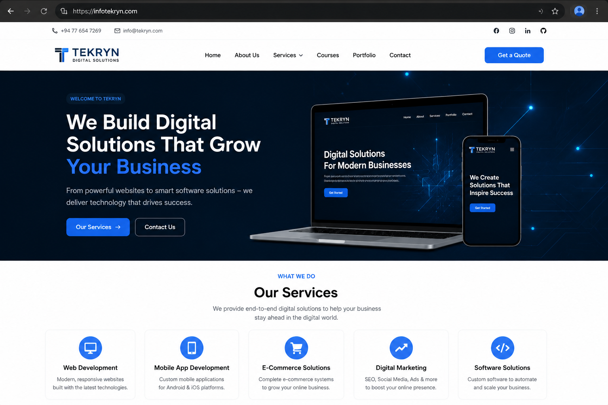

Web Development
Responsive websites using HTML, CSS, JavaScript, PHP, MySQL, React, and Firebase.
Software Developer & Cloud Deployer
I build responsive websites, mobile app concepts, business systems, and production-ready deployments with clean UI, database workflows, cloud hosting, SSL, and SEO setup.

Featured Deployment
Deployed the Tekryn Next.js company website on an Oracle Cloud VM with domain DNS, Nginx reverse proxy, HTTPS SSL, PM2 auto-restart, MySQL, sitemap, robots.txt, and Google Search Console indexing setup.

What I Do
From portfolio websites to Firebase apps, cloud deployments, and business systems, I focus on clean layouts, useful features, and professional delivery.
Responsive websites using HTML, CSS, JavaScript, PHP, MySQL, React, and Firebase.
Modern mobile app concepts with Firebase Auth, Firestore, clean screens, and APK delivery.
Domain DNS, Oracle Cloud VM hosting, Nginx reverse proxy, SSL, PM2, MySQL, and Google indexing setup.
Social Media
Follow my development work, portfolio updates, and digital projects across social platforms.